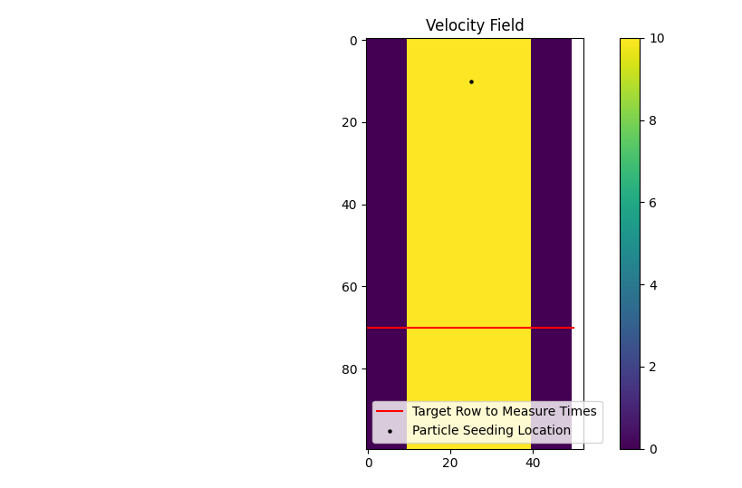
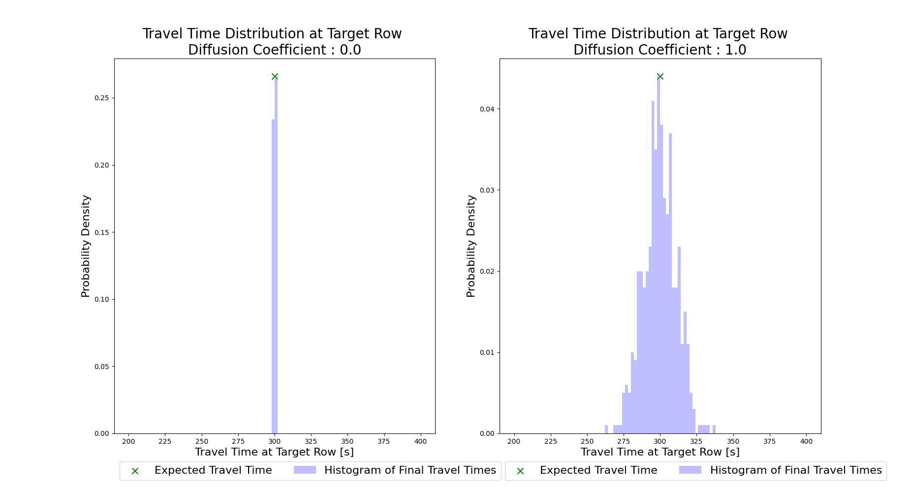

Example 11 - The Travel Time Diffusion Coefficient¶
In this example, we will develop a simple straight channel with steady, uniform flow. Then we will use two different travel time diffusion coefficient values (diff_coeff) and look at the impact on the particle travel time distributions at a specific location.
Shortened code for the synthetic channel creation will be provided, for the full code refer to the example script.
In the 100 x 50 cell domain, we have a straight channel with flow from the top of the domain to the bottom at -10 m/s. Our cell size is 50m, and the particles will be seeded at row 10. We will define a region of interest that extends to row 70, and apply the dorado.particle_track.exposure_time function to calculate the travel times of the particles. The region will end at the boundary of row 70. Since the flow velocity is both steady and uniform in this channel, our expected travel time is simply:
With this in mind we will conduct two simulations, both using 500 tracer particles. In the first, we will set the travel time diffusion coefficient (diff_coeff) to 0, and in the second we will set it to 1.0 (a significant amount of added diffusivity).
Shortened parameter initialization:
Then we will define diff_coeff, initialize the Particle class, and do the simulation.
If we then visualize the two travel time distributions (shown below), we can see the impact of raising the diff_coeff. If you’d like to experiment with this scenario, the full example script includes the code for generating the plots shown below.
 